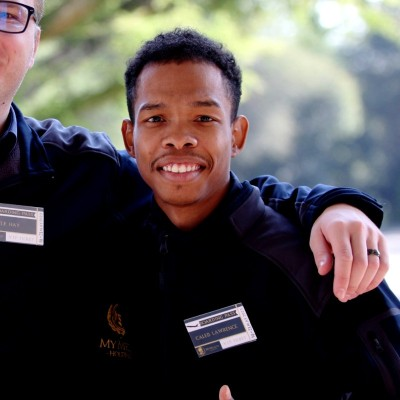

Software Setup Specialist | Web Developer | Graphic Designer
My name is Kaleb Lawrence, and I am a passionate and creative individual with a strong interest in both technology and design. I have experience working with software setup, web development, and graphic design, which allows me to approach projects from both a technical and visual perspective.
I enjoy building real projects that solve problems and improve user experience. I am constantly learning new skills and improving my knowledge in programming, web development, and digital design. I am motivated by growth, creativity, and the opportunity to build something meaningful.
My long-term goal is to build my own successful business in the digital space, where I can offer services such as web design, branding, and software solutions. I want to continue developing my skills and create work that stands out professionally.
Name: Kaleb Lawrence
Phone: 067 645 6506
Email: info@forgetfulcreations.co.za
LinkedIn: linkedin.com/in/kaleblawrence-tech
Location: Pretoria, South Africa
I am currently building my knowledge in software development and design through structured learning and practical projects. My training includes web development, programming, and building working applications.
I focus strongly on practical work, where I create real systems such as websites, applications, and digital designs. This approach helps me improve my skills and understand how to apply knowledge in real-world situations.
I have experience in software setup and technical support, where I assist with installing, configuring, and maintaining systems. This has helped me build strong problem-solving skills and attention to detail.
In addition, I have worked on creative projects involving web design, branding, and graphic design. I have built websites, designed visual content, and contributed to business branding projects.
I also have experience working on personal and academic projects, including building web applications, designing layouts, and creating functional systems that solve real problems.
I am highly motivated to grow in the tech and design industry. I enjoy learning new tools, improving my workflow, and working on projects that challenge me. I am always open to new opportunities where I can develop my skills further.